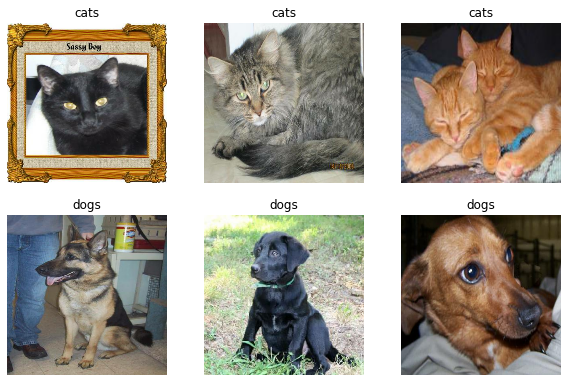
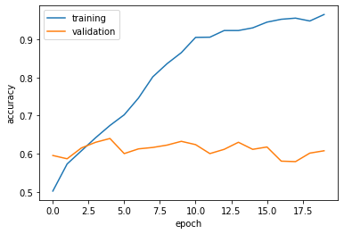
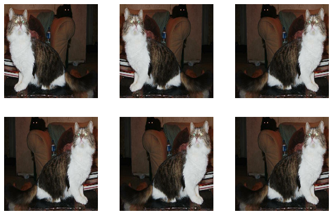
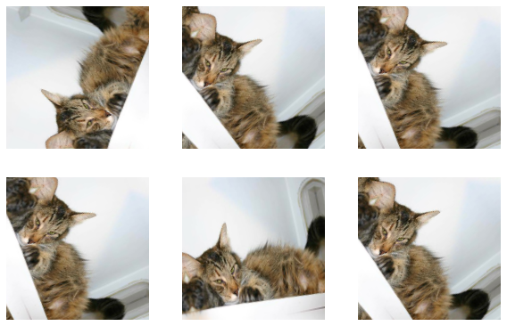
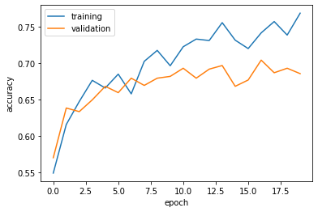
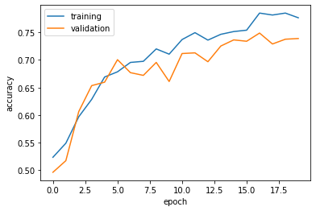
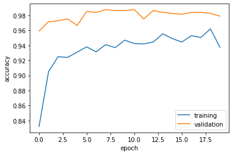

import os
import tensorflow as tf
from tensorflow.keras import utils
from tensorflow.keras import datasets, layers, models
import numpy as np
import matplotlib.pyplot as plt
from scipy.signal import convolve2d
# mute all tensorflow warnings
tf.compat.v1.logging.set_verbosity(tf.compat.v1.logging.ERROR)In this blog post, we attempt to train a machine learning algorithm to distinguish the images of cats and dogs.
We will go through four different models, and observe which one performs the best!
1. Introduction
Loading the correct packages…
We will use tensorflow.keras to build our ML algorithm! We will grab the appropriate modules under tensorflow.keras and also grab the usual numpy and matplotlib.pyplot for visualizations.
Loading the correct data…
This sample data, which contains labeled images of dogs and cats, is provided by the TensorFlow team. We run the following code to extract the data and create training, validation, and testing datasets.
# location of data
_URL = 'https://storage.googleapis.com/mledu-datasets/cats_and_dogs_filtered.zip'
# download the data and extract it
path_to_zip = utils.get_file('cats_and_dogs.zip', origin=_URL, extract=True)
# construct paths
PATH = os.path.join(os.path.dirname(path_to_zip), 'cats_and_dogs_filtered')
train_dir = os.path.join(PATH, 'train')
validation_dir = os.path.join(PATH, 'validation')
# parameters for datasets
BATCH_SIZE = 32
IMG_SIZE = (160, 160)
# construct train and validation datasets
train_dataset = utils.image_dataset_from_directory(train_dir,
shuffle=True,
batch_size=BATCH_SIZE,
image_size=IMG_SIZE)
validation_dataset = utils.image_dataset_from_directory(validation_dir,
shuffle=True,
batch_size=BATCH_SIZE,
image_size=IMG_SIZE)
# construct the test dataset by taking every 5th observation out of the validation dataset
val_batches = tf.data.experimental.cardinality(validation_dataset)
test_dataset = validation_dataset.take(val_batches // 5)
validation_dataset = validation_dataset.skip(val_batches // 5)
#create class names for the training set
class_names = train_dataset.class_namesFound 2000 files belonging to 2 classes.
Found 1000 files belonging to 2 classes.Now, the following code will help us read data with better performance:
AUTOTUNE = tf.data.AUTOTUNE
train_dataset = train_dataset.prefetch(buffer_size=AUTOTUNE)
validation_dataset = validation_dataset.prefetch(buffer_size=AUTOTUNE)
test_dataset = test_dataset.prefetch(buffer_size=AUTOTUNE) Let’s visualize what this data holds!
Here, we create a function named visualize_data that will take in our training dataset as its input parameter. We use dataset.take(1) in our function in order to access the first batch (32 images with labels) from the input dataset. As we iterate through this batch, we put the first 3 cat images into the first row, and we put the first 3 dog images into the second row.
def visualize_data(dataset):
plt.figure(figsize=(10, 10))
for images, labels in dataset.take(1):
i = 0
cats = 1
dogs = 4
for i in range(32):
if (labels[i].numpy() == 0):
if cats <= 3:
ax = plt.subplot(3, 3, cats)
plt.imshow(images[i].numpy().astype("uint8"))
plt.title(class_names[labels[i]])
plt.axis("off")
cats += 1
i += 1
elif (labels[i].numpy() == 1):
if dogs <= 6:
ax = plt.subplot(3, 3, dogs)
plt.imshow(images[i].numpy().astype("uint8"))
plt.title(class_names[labels[i]])
plt.axis("off")
dogs += 1
i += 1
visualize_data(train_dataset)
Analyzing our labels
In the following code, the first line creates an iterator named labels_iterator that contains labels for the training dataset. We will iterate through labels_iterator to see how many cat and dog images are in the training data, respectively.
labels_iterator = train_dataset.unbatch().map(lambda image, label: label).as_numpy_iterator()
cats = dogs = 0
for element in labels_iterator:
if element == 0:
cats += 1
else:
dogs += 1
cats, dogs (1000, 1000)So, we observe that there are a thousand images of each animal in the training set. Suppose we were to create our baseline machine learning model where the model always guesses the most frequent label. In this case, since neither the dog or the cat takes the majority, without loss of generality, suppose that all images are labeled as dogs. Then, our model would only be 50% accurate! (Not so great… but we will definitely come up with better models).
2. First Simple Model
Let’s create our first tf.keras.Sequential model using three Conv2D layers, two MaxPooling2D layers, one Flatten layer, two Dense layers, and one Dropout layer.
model1 = models.Sequential([
layers.Conv2D(32, (3, 3), activation='relu', input_shape=(160, 160, 3)),
layers.MaxPooling2D((2, 2)),
layers.Conv2D(32, (3, 3), activation='relu'),
layers.MaxPooling2D((2, 2)),
layers.Conv2D(64, (3, 3), activation='relu'),
layers.Flatten(),
layers.Dense(64, activation='relu'),
layers.Dropout(.15),
layers.Dense(2)
])We will run the summary for this model and observe what’s really happening:
model1.summary()Model: "sequential"
_________________________________________________________________
Layer (type) Output Shape Param #
=================================================================
conv2d (Conv2D) (None, 158, 158, 32) 896
max_pooling2d (MaxPooling2D (None, 79, 79, 32) 0
)
conv2d_1 (Conv2D) (None, 77, 77, 32) 9248
max_pooling2d_1 (MaxPooling (None, 38, 38, 32) 0
2D)
conv2d_2 (Conv2D) (None, 36, 36, 64) 18496
flatten (Flatten) (None, 82944) 0
dense (Dense) (None, 64) 5308480
dropout (Dropout) (None, 64) 0
dense_1 (Dense) (None, 2) 130
=================================================================
Total params: 5,337,250
Trainable params: 5,337,250
Non-trainable params: 0
_________________________________________________________________From the above summary, we use 2D convolution layers with the first argument representing the dimensionality of the output filter, the second argument representing the kernel size, the third argument representing the activation method, and (for the first convolution) the last argument being our input shape. We use maxpooling in between the convolutions in order to create a downsampled map and help with overfitting. We use a flatten layer next to create a fully connected layer. Then, we use a dense layer to reduce the output shape and add extra parameters and then a dropout layer to once again help with overfitting. Finally, we use a final dense layer with 2 as our argument since we have 2 classes in our dataset and our final classifications want to be one of these two classes.
Now, we will compile this model with our optimizer as adam, loss function as SparseCategoricalCrossentropy(from_logits=True) and metrics as accuracy, and then train for 20 epochs.
model1.compile(optimizer='adam',
loss = tf.keras.losses.SparseCategoricalCrossentropy(from_logits=True),
metrics = ['accuracy'])
history = model1.fit(train_dataset,
epochs=20,
validation_data=validation_dataset)Epoch 1/20
63/63 [==============================] - 16s 88ms/step - loss: 44.9696 - accuracy: 0.5020 - val_loss: 0.6870 - val_accuracy: 0.5953
Epoch 2/20
63/63 [==============================] - 4s 55ms/step - loss: 0.6818 - accuracy: 0.5730 - val_loss: 0.6840 - val_accuracy: 0.5866
Epoch 3/20
63/63 [==============================] - 4s 55ms/step - loss: 0.6475 - accuracy: 0.6075 - val_loss: 0.6806 - val_accuracy: 0.6151
Epoch 4/20
63/63 [==============================] - 6s 98ms/step - loss: 0.6385 - accuracy: 0.6420 - val_loss: 0.7185 - val_accuracy: 0.6300
Epoch 5/20
63/63 [==============================] - 4s 55ms/step - loss: 0.6098 - accuracy: 0.6740 - val_loss: 0.7658 - val_accuracy: 0.6399
Epoch 6/20
63/63 [==============================] - 4s 56ms/step - loss: 0.5610 - accuracy: 0.7020 - val_loss: 0.8488 - val_accuracy: 0.6002
Epoch 7/20
63/63 [==============================] - 5s 79ms/step - loss: 0.5104 - accuracy: 0.7460 - val_loss: 0.8166 - val_accuracy: 0.6126
Epoch 8/20
63/63 [==============================] - 4s 56ms/step - loss: 0.4451 - accuracy: 0.8015 - val_loss: 0.8863 - val_accuracy: 0.6163
Epoch 9/20
63/63 [==============================] - 4s 55ms/step - loss: 0.3640 - accuracy: 0.8360 - val_loss: 1.0622 - val_accuracy: 0.6225
Epoch 10/20
63/63 [==============================] - 5s 72ms/step - loss: 0.2903 - accuracy: 0.8650 - val_loss: 1.2995 - val_accuracy: 0.6324
Epoch 11/20
63/63 [==============================] - 4s 57ms/step - loss: 0.2253 - accuracy: 0.9050 - val_loss: 1.3045 - val_accuracy: 0.6238
Epoch 12/20
63/63 [==============================] - 4s 56ms/step - loss: 0.2139 - accuracy: 0.9055 - val_loss: 1.5454 - val_accuracy: 0.6002
Epoch 13/20
63/63 [==============================] - 5s 73ms/step - loss: 0.1819 - accuracy: 0.9230 - val_loss: 1.6978 - val_accuracy: 0.6114
Epoch 14/20
63/63 [==============================] - 4s 56ms/step - loss: 0.1970 - accuracy: 0.9230 - val_loss: 1.5058 - val_accuracy: 0.6300
Epoch 15/20
63/63 [==============================] - 5s 80ms/step - loss: 0.1654 - accuracy: 0.9300 - val_loss: 1.4810 - val_accuracy: 0.6114
Epoch 16/20
63/63 [==============================] - 5s 76ms/step - loss: 0.1454 - accuracy: 0.9450 - val_loss: 1.6093 - val_accuracy: 0.6176
Epoch 17/20
63/63 [==============================] - 4s 56ms/step - loss: 0.1030 - accuracy: 0.9525 - val_loss: 1.8539 - val_accuracy: 0.5804
Epoch 18/20
63/63 [==============================] - 4s 55ms/step - loss: 0.1046 - accuracy: 0.9555 - val_loss: 1.8649 - val_accuracy: 0.5792
Epoch 19/20
63/63 [==============================] - 4s 60ms/step - loss: 0.1119 - accuracy: 0.9480 - val_loss: 1.9559 - val_accuracy: 0.6015
Epoch 20/20
63/63 [==============================] - 5s 68ms/step - loss: 0.0777 - accuracy: 0.9650 - val_loss: 2.3769 - val_accuracy: 0.6077We will also plot the accuracy of both the training and validation sets across the 20 epochs.
plt.plot(history.history["accuracy"], label = "training")
plt.plot(history.history["val_accuracy"], label = "validation")
plt.gca().set(xlabel = "epoch", ylabel = "accuracy")
plt.legend()<matplotlib.legend.Legend at 0x7f1811f7f370>
3. Second Model (Data Augmentation Layers)
In this section, we will explore data augmentation using two notable layers: RandomFlip and RandomRotation. First, let’s visualize what each of these layers do to a given image:
We first create our two layers, each holding RandonFlip and RandomRotation, respectively, and then we create another layer that combines the two so that we can use it for the model later.
random_flip = tf.keras.Sequential([
tf.keras.layers.RandomFlip('horizontal', input_shape=(160,160,3))
])
random_rotation = tf.keras.Sequential([
tf.keras.layers.RandomRotation(0.2, input_shape=(160,160,3))
])
data_augmentation = tf.keras.Sequential([
tf.keras.layers.RandomFlip('horizontal', input_shape=(160,160,3)),
tf.keras.layers.RandomRotation(0.2),
])Now, the following code will take in the first random image in the training dataset batch and apply random_flip and random_rotation separately. We should expect two plots with 6 images each.
for image, _ in train_dataset.take(1):
plt.figure(figsize=(10, 10))
first_image = image[0]
for i in range(6):
ax = plt.subplot(3, 3, i + 1)
augmented_image = random_flip(tf.expand_dims(first_image, 0))
plt.imshow(augmented_image[0] / 255)
plt.axis('off')
for image, _ in train_dataset.take(1):
plt.figure(figsize=(10, 10))
first_image = image[0]
for i in range(6):
ax = plt.subplot(3, 3, i + 1)
augmented_image = random_rotation(tf.expand_dims(first_image, 0))
plt.imshow(augmented_image[0] / 255)
plt.axis('off')

As we can see, in the first plots, the layer RandonFlip was able to flip the image horizontally as we specified in the argument. In the second plots, the layer RandomRotation was able to rotate the image by a certain amount. The reason for adding these layers is to account for the fact that images can be presented in a format that’s flipped or rotated, and we still want the model to be able to detect that it is either a dog or a cat. So, we are now ready to build our revised model!
model2 = models.Sequential([
data_augmentation,
layers.Conv2D(32, (3, 3), activation='relu'),
layers.MaxPooling2D((2, 2)),
layers.Conv2D(32, (3, 3), activation='relu'),
layers.MaxPooling2D((2, 2)),
layers.Conv2D(64, (3, 3), activation='relu'),
layers.Flatten(),
layers.Dropout(.15),
layers.Dense(64, activation='relu'),
layers.Dense(2)
])We again run the summary of our model and compile/train the model as follows:
model2.summary()Model: "sequential_4"
_________________________________________________________________
Layer (type) Output Shape Param #
=================================================================
sequential_3 (Sequential) (None, 160, 160, 3) 0
conv2d_3 (Conv2D) (None, 158, 158, 32) 896
max_pooling2d_2 (MaxPooling (None, 79, 79, 32) 0
2D)
conv2d_4 (Conv2D) (None, 77, 77, 32) 9248
max_pooling2d_3 (MaxPooling (None, 38, 38, 32) 0
2D)
conv2d_5 (Conv2D) (None, 36, 36, 64) 18496
flatten_1 (Flatten) (None, 82944) 0
dropout_1 (Dropout) (None, 82944) 0
dense_2 (Dense) (None, 64) 5308480
dense_3 (Dense) (None, 2) 130
=================================================================
Total params: 5,337,250
Trainable params: 5,337,250
Non-trainable params: 0
_________________________________________________________________model2.compile(optimizer='adam',
loss = tf.keras.losses.SparseCategoricalCrossentropy(from_logits=True),
metrics = ['accuracy'])
history = model2.fit(train_dataset,
epochs=20,
validation_data=validation_dataset)Epoch 1/20
63/63 [==============================] - 14s 139ms/step - loss: 11.4598 - accuracy: 0.5495 - val_loss: 0.8126 - val_accuracy: 0.5705
Epoch 2/20
63/63 [==============================] - 10s 148ms/step - loss: 0.6895 - accuracy: 0.6160 - val_loss: 0.6411 - val_accuracy: 0.6386
Epoch 3/20
63/63 [==============================] - 10s 152ms/step - loss: 0.6429 - accuracy: 0.6475 - val_loss: 0.6407 - val_accuracy: 0.6337
Epoch 4/20
63/63 [==============================] - 9s 133ms/step - loss: 0.6037 - accuracy: 0.6765 - val_loss: 0.6361 - val_accuracy: 0.6498
Epoch 5/20
63/63 [==============================] - 9s 137ms/step - loss: 0.6030 - accuracy: 0.6660 - val_loss: 0.6067 - val_accuracy: 0.6683
Epoch 6/20
63/63 [==============================] - 10s 147ms/step - loss: 0.5880 - accuracy: 0.6850 - val_loss: 0.6077 - val_accuracy: 0.6597
Epoch 7/20
63/63 [==============================] - 10s 148ms/step - loss: 0.6139 - accuracy: 0.6580 - val_loss: 0.6097 - val_accuracy: 0.6795
Epoch 8/20
63/63 [==============================] - 9s 140ms/step - loss: 0.5646 - accuracy: 0.7025 - val_loss: 0.6170 - val_accuracy: 0.6696
Epoch 9/20
63/63 [==============================] - 9s 133ms/step - loss: 0.5531 - accuracy: 0.7175 - val_loss: 0.6040 - val_accuracy: 0.6795
Epoch 10/20
63/63 [==============================] - 10s 148ms/step - loss: 0.5677 - accuracy: 0.6965 - val_loss: 0.5986 - val_accuracy: 0.6819
Epoch 11/20
63/63 [==============================] - 10s 147ms/step - loss: 0.5424 - accuracy: 0.7225 - val_loss: 0.5900 - val_accuracy: 0.6931
Epoch 12/20
63/63 [==============================] - 10s 147ms/step - loss: 0.5341 - accuracy: 0.7330 - val_loss: 0.5981 - val_accuracy: 0.6795
Epoch 13/20
63/63 [==============================] - 9s 136ms/step - loss: 0.5261 - accuracy: 0.7310 - val_loss: 0.5854 - val_accuracy: 0.6918
Epoch 14/20
63/63 [==============================] - 10s 143ms/step - loss: 0.5114 - accuracy: 0.7555 - val_loss: 0.6131 - val_accuracy: 0.6968
Epoch 15/20
63/63 [==============================] - 10s 147ms/step - loss: 0.5374 - accuracy: 0.7315 - val_loss: 0.6339 - val_accuracy: 0.6683
Epoch 16/20
63/63 [==============================] - 10s 149ms/step - loss: 0.5483 - accuracy: 0.7200 - val_loss: 0.5854 - val_accuracy: 0.6770
Epoch 17/20
63/63 [==============================] - 9s 134ms/step - loss: 0.5092 - accuracy: 0.7415 - val_loss: 0.6025 - val_accuracy: 0.7042
Epoch 18/20
63/63 [==============================] - 9s 132ms/step - loss: 0.5057 - accuracy: 0.7570 - val_loss: 0.5981 - val_accuracy: 0.6869
Epoch 19/20
63/63 [==============================] - 10s 148ms/step - loss: 0.5154 - accuracy: 0.7385 - val_loss: 0.6104 - val_accuracy: 0.6931
Epoch 20/20
63/63 [==============================] - 9s 146ms/step - loss: 0.4978 - accuracy: 0.7685 - val_loss: 0.6606 - val_accuracy: 0.6856plt.plot(history.history["accuracy"], label = "training")
plt.plot(history.history["val_accuracy"], label = "validation")
plt.gca().set(xlabel = "epoch", ylabel = "accuracy")
plt.legend()<matplotlib.legend.Legend at 0x7f18119e1610>
Comments on Model 2:
- The accuracy of my model stabilized between 67% and 70%.
- Compared with the baseline of 50%, this model did even better than that AND
model1, so we see a steady improvement to our models as we keep adding more layers. - Yes, there is still a bit of an overfitting issue as seen in the graph above. Definitely not as bad as
model1; however, we want to try to avoid overfitting as much as we can.
4. Third Model (Data Preprocessing)
In this section, we will explore data preprocessing, such as scaling the RGB code down into something that’s easier to compute. The following code will create that preprocessor layer in which we can insert into the beginning of our model:
i = tf.keras.Input(shape=(160, 160, 3))
x = tf.keras.applications.mobilenet_v2.preprocess_input(i)
preprocessor = tf.keras.Model(inputs = [i], outputs = [x])Now, here’s our model3 with the preprocessor layer:
model3 = models.Sequential([
preprocessor,
data_augmentation,
layers.Conv2D(32, (3, 3), activation='relu'),
layers.MaxPooling2D((2, 2)),
layers.Conv2D(32, (3, 3), activation='relu'),
layers.MaxPooling2D((2, 2)),
layers.Conv2D(64, (3, 3), activation='relu'),
layers.Flatten(),
layers.Dropout(.15),
layers.Dense(64, activation='relu'),
layers.Dense(2)
])model3.summary()Model: "sequential_8"
_________________________________________________________________
Layer (type) Output Shape Param #
=================================================================
model (Functional) (None, 160, 160, 3) 0
sequential_3 (Sequential) (None, 160, 160, 3) 0
conv2d_12 (Conv2D) (None, 158, 158, 32) 896
max_pooling2d_8 (MaxPooling (None, 79, 79, 32) 0
2D)
conv2d_13 (Conv2D) (None, 77, 77, 32) 9248
max_pooling2d_9 (MaxPooling (None, 38, 38, 32) 0
2D)
conv2d_14 (Conv2D) (None, 36, 36, 64) 18496
flatten_4 (Flatten) (None, 82944) 0
dropout_5 (Dropout) (None, 82944) 0
dense_9 (Dense) (None, 64) 5308480
dense_10 (Dense) (None, 2) 130
=================================================================
Total params: 5,337,250
Trainable params: 5,337,250
Non-trainable params: 0
_________________________________________________________________model3.compile(optimizer='adam',
loss = tf.keras.losses.SparseCategoricalCrossentropy(from_logits=True),
metrics = ['accuracy'])
history = model3.fit(train_dataset,
epochs=20,
validation_data=validation_dataset)Epoch 1/20
63/63 [==============================] - 14s 137ms/step - loss: 0.8643 - accuracy: 0.5235 - val_loss: 0.6857 - val_accuracy: 0.4963
Epoch 2/20
63/63 [==============================] - 10s 148ms/step - loss: 0.6777 - accuracy: 0.5490 - val_loss: 0.6660 - val_accuracy: 0.5173
Epoch 3/20
63/63 [==============================] - 10s 148ms/step - loss: 0.6555 - accuracy: 0.5970 - val_loss: 0.6430 - val_accuracy: 0.6064
Epoch 4/20
63/63 [==============================] - 9s 134ms/step - loss: 0.6249 - accuracy: 0.6285 - val_loss: 0.6168 - val_accuracy: 0.6535
Epoch 5/20
63/63 [==============================] - 10s 144ms/step - loss: 0.6073 - accuracy: 0.6690 - val_loss: 0.6086 - val_accuracy: 0.6597
Epoch 6/20
63/63 [==============================] - 10s 150ms/step - loss: 0.5958 - accuracy: 0.6785 - val_loss: 0.5875 - val_accuracy: 0.7005
Epoch 7/20
63/63 [==============================] - 10s 150ms/step - loss: 0.5788 - accuracy: 0.6955 - val_loss: 0.5962 - val_accuracy: 0.6770
Epoch 8/20
63/63 [==============================] - 9s 137ms/step - loss: 0.5759 - accuracy: 0.6975 - val_loss: 0.5958 - val_accuracy: 0.6720
Epoch 9/20
63/63 [==============================] - 10s 144ms/step - loss: 0.5645 - accuracy: 0.7200 - val_loss: 0.5870 - val_accuracy: 0.6955
Epoch 10/20
63/63 [==============================] - 10s 150ms/step - loss: 0.5484 - accuracy: 0.7105 - val_loss: 0.6025 - val_accuracy: 0.6609
Epoch 11/20
63/63 [==============================] - 10s 148ms/step - loss: 0.5394 - accuracy: 0.7370 - val_loss: 0.5544 - val_accuracy: 0.7116
Epoch 12/20
63/63 [==============================] - 9s 136ms/step - loss: 0.5101 - accuracy: 0.7495 - val_loss: 0.5502 - val_accuracy: 0.7129
Epoch 13/20
63/63 [==============================] - 9s 133ms/step - loss: 0.5222 - accuracy: 0.7360 - val_loss: 0.5952 - val_accuracy: 0.6968
Epoch 14/20
63/63 [==============================] - 9s 139ms/step - loss: 0.5076 - accuracy: 0.7465 - val_loss: 0.5241 - val_accuracy: 0.7252
Epoch 15/20
63/63 [==============================] - 9s 145ms/step - loss: 0.5056 - accuracy: 0.7515 - val_loss: 0.5270 - val_accuracy: 0.7364
Epoch 16/20
63/63 [==============================] - 9s 145ms/step - loss: 0.4845 - accuracy: 0.7540 - val_loss: 0.5366 - val_accuracy: 0.7339
Epoch 17/20
63/63 [==============================] - 9s 131ms/step - loss: 0.4622 - accuracy: 0.7850 - val_loss: 0.5198 - val_accuracy: 0.7488
Epoch 18/20
63/63 [==============================] - 8s 129ms/step - loss: 0.4635 - accuracy: 0.7815 - val_loss: 0.5485 - val_accuracy: 0.7290
Epoch 19/20
63/63 [==============================] - 9s 143ms/step - loss: 0.4443 - accuracy: 0.7850 - val_loss: 0.5405 - val_accuracy: 0.7376
Epoch 20/20
63/63 [==============================] - 9s 144ms/step - loss: 0.4420 - accuracy: 0.7765 - val_loss: 0.5702 - val_accuracy: 0.7389plt.plot(history.history["accuracy"], label = "training")
plt.plot(history.history["val_accuracy"], label = "validation")
plt.gca().set(xlabel = "epoch", ylabel = "accuracy")
plt.legend()<matplotlib.legend.Legend at 0x7f1748062760>
Comments on Model 3:
- The accuracy of my model stabilized between 70% and 75%.
- This result is slightly better than
model2, so yes, we are still improving our model! - A huge fix with this revised model is that we see less of an overfitting now. The validation data accuracy in the above graph is almost aligned with that of the training data accuracy.
5. Last Model (Transfer Learning)
In this section, we perhaps explore the possibility of a preexisting model that might achieve a similar outcome as us trying to distinguish between cats and dogs. In order to perform “transfer learning”, we must first access the pre-existing “base model”. The following code is a base model from MobileNetV2 that we will use in our model to see if it improves!
IMG_SHAPE = IMG_SIZE + (3,)
base_model = tf.keras.applications.MobileNetV2(input_shape=IMG_SHAPE,
include_top=False,
weights='imagenet')
base_model.trainable = False
i = tf.keras.Input(shape=IMG_SHAPE)
x = base_model(i, training = False)
base_model_layer = tf.keras.Model(inputs = [i], outputs = [x])After adding the base_model_layer, the process is same as all our other models:
model4 = models.Sequential([
preprocessor,
data_augmentation,
base_model_layer,
layers.GlobalMaxPooling2D(),
layers.Dropout(.2),
layers.Dense(2)
])model4.summary()Model: "sequential_6"
_________________________________________________________________
Layer (type) Output Shape Param #
=================================================================
model (Functional) (None, 160, 160, 3) 0
sequential_3 (Sequential) (None, 160, 160, 3) 0
model_1 (Functional) (None, 5, 5, 1280) 2257984
global_max_pooling2d (Globa (None, 1280) 0
lMaxPooling2D)
dropout_3 (Dropout) (None, 1280) 0
dense_6 (Dense) (None, 2) 2562
=================================================================
Total params: 2,260,546
Trainable params: 2,562
Non-trainable params: 2,257,984
_________________________________________________________________Interesting note here: why did we have to add GlobalMaxPooling2D and Dropout layers? As we notice the base model has a ton of complexity behind it, giving us roughly 2.25 million parameters. In order to reduce this down and make sure we only pick out the sharpest data that we can use, GlobalMaxPooling2D is implemented and Dropout is used once again to help with overfitting issues.
model4.compile(optimizer='adam',
loss = tf.keras.losses.SparseCategoricalCrossentropy(from_logits=True),
metrics = ['accuracy'])
history = model4.fit(train_dataset,
epochs=20,
validation_data=validation_dataset)Epoch 1/20
63/63 [==============================] - 19s 182ms/step - loss: 0.6787 - accuracy: 0.8320 - val_loss: 0.1160 - val_accuracy: 0.9592
Epoch 2/20
63/63 [==============================] - 10s 158ms/step - loss: 0.4032 - accuracy: 0.9050 - val_loss: 0.0677 - val_accuracy: 0.9715
Epoch 3/20
63/63 [==============================] - 10s 157ms/step - loss: 0.2699 - accuracy: 0.9250 - val_loss: 0.0849 - val_accuracy: 0.9728
Epoch 4/20
63/63 [==============================] - 10s 155ms/step - loss: 0.3055 - accuracy: 0.9240 - val_loss: 0.0729 - val_accuracy: 0.9752
Epoch 5/20
63/63 [==============================] - 10s 162ms/step - loss: 0.2478 - accuracy: 0.9310 - val_loss: 0.0916 - val_accuracy: 0.9666
Epoch 6/20
63/63 [==============================] - 10s 153ms/step - loss: 0.2547 - accuracy: 0.9380 - val_loss: 0.0511 - val_accuracy: 0.9851
Epoch 7/20
63/63 [==============================] - 10s 159ms/step - loss: 0.2813 - accuracy: 0.9315 - val_loss: 0.0438 - val_accuracy: 0.9839
Epoch 8/20
63/63 [==============================] - 10s 159ms/step - loss: 0.2201 - accuracy: 0.9410 - val_loss: 0.0414 - val_accuracy: 0.9876
Epoch 9/20
63/63 [==============================] - 10s 158ms/step - loss: 0.2268 - accuracy: 0.9370 - val_loss: 0.0428 - val_accuracy: 0.9864
Epoch 10/20
63/63 [==============================] - 9s 143ms/step - loss: 0.1953 - accuracy: 0.9470 - val_loss: 0.0444 - val_accuracy: 0.9864
Epoch 11/20
63/63 [==============================] - 12s 181ms/step - loss: 0.2069 - accuracy: 0.9425 - val_loss: 0.0436 - val_accuracy: 0.9876
Epoch 12/20
63/63 [==============================] - 9s 142ms/step - loss: 0.2078 - accuracy: 0.9420 - val_loss: 0.0814 - val_accuracy: 0.9752
Epoch 13/20
63/63 [==============================] - 10s 158ms/step - loss: 0.2013 - accuracy: 0.9445 - val_loss: 0.0541 - val_accuracy: 0.9864
Epoch 14/20
63/63 [==============================] - 10s 157ms/step - loss: 0.1439 - accuracy: 0.9555 - val_loss: 0.0635 - val_accuracy: 0.9839
Epoch 15/20
63/63 [==============================] - 10s 155ms/step - loss: 0.1664 - accuracy: 0.9490 - val_loss: 0.0443 - val_accuracy: 0.9827
Epoch 16/20
63/63 [==============================] - 9s 144ms/step - loss: 0.2237 - accuracy: 0.9445 - val_loss: 0.0545 - val_accuracy: 0.9814
Epoch 17/20
63/63 [==============================] - 9s 141ms/step - loss: 0.1448 - accuracy: 0.9530 - val_loss: 0.0532 - val_accuracy: 0.9839
Epoch 18/20
63/63 [==============================] - 10s 156ms/step - loss: 0.1962 - accuracy: 0.9505 - val_loss: 0.0577 - val_accuracy: 0.9839
Epoch 19/20
63/63 [==============================] - 10s 156ms/step - loss: 0.1373 - accuracy: 0.9620 - val_loss: 0.0443 - val_accuracy: 0.9827
Epoch 20/20
63/63 [==============================] - 10s 154ms/step - loss: 0.2092 - accuracy: 0.9375 - val_loss: 0.0695 - val_accuracy: 0.9790plt.plot(history.history["accuracy"], label = "training")
plt.plot(history.history["val_accuracy"], label = "validation")
plt.gca().set(xlabel = "epoch", ylabel = "accuracy")
plt.legend()<matplotlib.legend.Legend at 0x7f1793b058e0>
Comments on Model 4:
- The accuracy of my model stabilized between 96% and 99%.
- This accuracy is far greater than
model1and any other models we have tested so far! - Again, no overfitting issues seem to be present!
6. Evaluating Testing Data using Best Model
Now, time to use our most accurate model and actually evaluate it on the testing data:
model4.evaluate(test_dataset, verbose=1)6/6 [==============================] - 1s 44ms/step - loss: 0.0714 - accuracy: 0.9740[0.07142321765422821, 0.9739583134651184]The accuracy turned out to be 97.4%, which is pretty impressive!
Comments on Model 1:
model1. As we notice in the graph, the accuracy on the training data shoots way above the accuracy on the validation data, meaning the model is too catered to fit the training data.